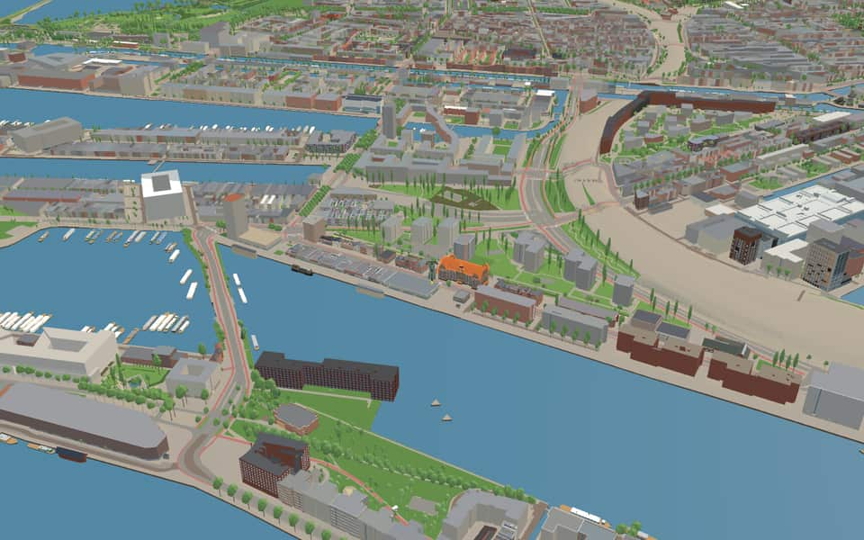
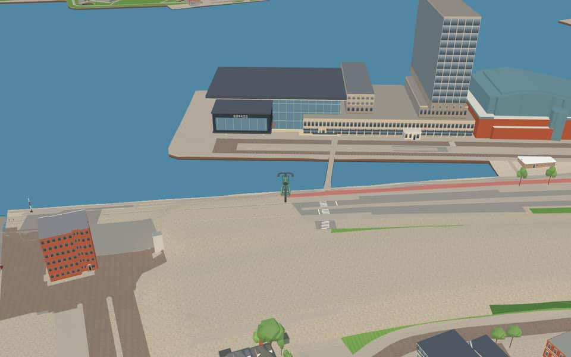
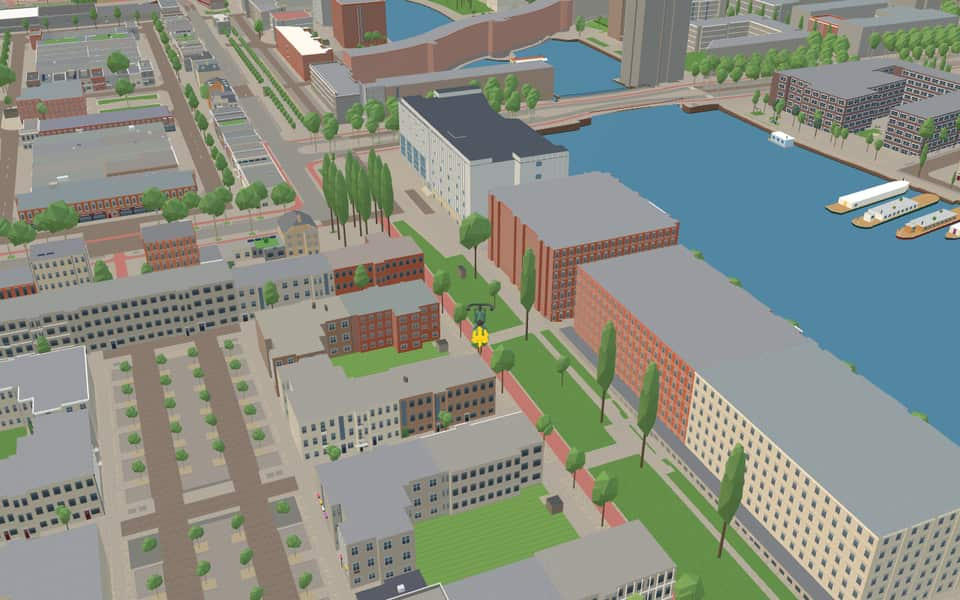
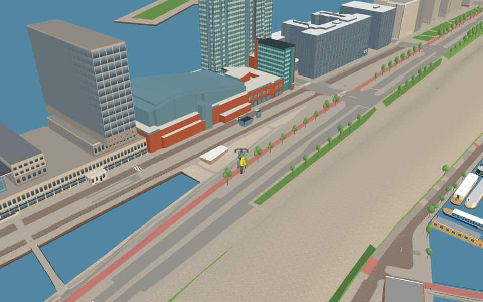

Quarter · Amsterdam
Oostelijk Havengebied
The Eastern Docklands (Oostelijk Havengebied) is a residential district in the Oost borough. At the end of the 19th century this area on the south side of the IJ, close to the Zuiderzee, was set aside to expand Amsterdam's port. nl.wikipedia.org

In the game
Frames from a ride through Oostelijk Havengebied.



6 more photos of Oostelijk Havengebied


.jpg){kind=link}

.JPG){kind=link}

.JPG){kind=link}

.jpg){kind=link}
Built here
Buildings modelled one by one for the ride.
bimhuis in Amsterdam, The Netherlands
International Institute of Social History

Muziekgebouw aan ’t IJ / Bimhuis
Photo: Muziekgebouw aan 't IJ.jpg (Building by 3XN; photo by Flickr user Metro Centric, CC BY 2.0)
IJ-toren
- No picture yet
Club Panama
- No picture yet
Hotel Jakarta
- No picture yet
Lloyd Hotel
- No picture yet
Odessa
- No picture yet
Pakhuis de Zwijger
- No picture yet
Piet Hein Buildings
- No picture yet
Woongebouw Wladiwostok
- No picture yet
Bogortuin 101
- No picture yet
Oostelijke Handelskade 749, Amsterdam-Centrum (Oostelijke Handelskade)
2012 residential and office blocks in warehouse style with tall round-arched brick arcades, cream string courses and a rusticated base
- No picture yet
Waagdragerhof 198 (Pakhuis Wilhelmina), Amsterdam-Centrum (Veemkade, KNSM-eiland)
2004 block with an eleven-storey dark red brick residential tower over the retained arched brick warehouse Pakhuis Wilhelmina, whose tall arched windows carry the lettering PAK HUIS WIL HEL MINA

Did you know
Trivia the ride can show you here.
- Loods 6 (1922), the only harbour shed preserved in full, now houses more than a hundred artists. Wikipedia (translated from Dutch)
- BimhuisThe venue opened its doors on October 1, 1974 after being founded the previous year. en.wikipedia.org
- BimhuisIn 2017, the hall hosted the seventeenth edition of the Sonic Acts Festival. en.wikipedia.org
- International Institute of Social HistoryDuring WWII, Nazi agents stole archives to store them for an advanced party school rather than destroy them. en.wikipedia.org
- International Institute of Social HistoryLost papers were rediscovered in Hannover in 1946 and later found in Moscow before returning to Amsterdam. en.wikipedia.org
- International Institute of Social HistoryThe institute hosts part of the IHLIA LGBT Heritage collection known as the LGBT Archives. en.wikipedia.org
- International Institute of Social HistoryFounder Nicolaas Posthumus established the institute in 1935 as an independent scientific body. en.wikipedia.org
- Kraan 2868Kraan 2868 was manufactured in 1957 by the Figee factory after all cranes were destroyed in 1944. nl.wikipedia.org
- Kraan 2868The crane officially became a municipal monument in late November 2011. nl.wikipedia.org
- MuziekgebouwThe venue replaced the former Muziekcentrum de IJsbreker, which was shut down at Weesperzijde. en.wikipedia.org
- MuziekgebouwThe venue officially opened its doors to the public in 2005. en.wikipedia.org
- MuziekgebouwDanish architects from the firm 3XN designed this concert hall. en.wikipedia.org
- Mien RuysplantsoenMien Ruys came from a Rotterdam family of shipping and cargo drivers. nl.wikipedia.org
- Mien RuysplantsoenFive tall poplars across the street are all that remain of a group once called The Seven Sisters. nl.wikipedia.org
55 more facts
- RietlandparkUntil roughly 1880, the site was an uninhabited, swampy area covered in reeds outside the dikes. nl.wikipedia.org
- RietlandparkThe railway yard and trade areas were constructed here at the end of the nineteenth century. nl.wikipedia.org
- Ad GrimmonbrugThe name fits a local pattern where neighborhood streets honor architects and urban planners. nl.wikipedia.org
- Ad GrimmonbrugBuilt in 1991, the structure is made almost entirely of reinforced concrete. nl.wikipedia.org
- Jan SchaeferbrugA pontoon bridge variant was rejected for being too expensive despite visible pillar plans. nl.wikipedia.org
- Jan SchaeferbrugConstruction on this fixed bridge began in 1999 and it opened on September 29, 2001. nl.wikipedia.org
- Jan SchaeferbrugAlderman Duco Stadig officially opened the bridge while Jan Schaefer's widow looked on. nl.wikipedia.org
- Jan SchaeferbrugThe architectural code C107 from firm VenhoevenCS remains visible on the northern tip. nl.wikipedia.org
- ZouthavenbrugZouthavenbrug takes its name from a former salt harbor that vanished under sand before being excavated again. nl.wikipedia.org
- ZouthavenbrugArchitect Hans van Heeswijk designed the bridge in 2000 to emphasize the nautical character of its surroundings. nl.wikipedia.org
- Amsterdam-RijnkanaalA young engineer named Anton Mussert drafted the final plan before becoming notorious. en.wikipedia.org
- Amsterdam-RijnkanaalWorld War II delayed the project until Queen Juliana officially opened it in May 1952. en.wikipedia.org
- Amsterdam-RijnkanaalThe canal stretches 72 km, spans over 100 meters wide, and reaches a depth of 6 meters. en.wikipedia.org
- Amsterdam-RijnkanaalIn 2016 alone, 91,495 vessels navigated its waters carrying over 77 million tons of cargo. en.wikipedia.org
- BrantasgrachtThe name Brantasgracht honors the Indonesian river Brantas on Java. nl.wikipedia.org
- BrantasgrachtSjoerd Soeters designed the entire neighborhood surrounding this canal. nl.wikipedia.org
- BrantasgrachtHouse numbers run from one to twenty-one, yet number twenty is completely missing. nl.wikipedia.org
- BrantasgrachtThe corner complex at Brantasgracht three to five was designed by the firm Cruz y Ortiz. nl.wikipedia.org
- EntrepothavenThe harbor was excavated directly into a swamp area known as the City Reedlands. nl.wikipedia.org
- EntrepothavenSecurity relied on a wall along Cruquiusweg, railway gates, and a barrier of wooden stakes in the water. nl.wikipedia.org
- EntrepothavenEntrepothaven connects to the Nieuwe Vaart via a sluice gate crossed by Bridge 352. nl.wikipedia.org
- EntrepothavenConstruction of this eastern port took place between 1898 and 1900. nl.wikipedia.org
- ErtshavenThe name Ertshaven reflects the heavy silt overflow that once characterized this water. nl.wikipedia.org
- ErtshavenThe Blauwehoofdbrug spans the port while it discharges into the Amsterdam-Rhine Canal. nl.wikipedia.org
- IJThe largest part of the IJ was reclaimed between 1865 and 1876 to create new polders. en.wikipedia.org
- IJThe Buiten-IJ hosted mixed dinghy sailing events during the 1928 Summer Olympics in Amsterdam. en.wikipedia.org
- IJOranjesluizen locks divide the waterway into an inner section and an outer extension. en.wikipedia.org
- IJThe western part connects directly to the North Sea Canal while the eastern side extends the IJmeer. en.wikipedia.org
- IJhavenThe IJhaven was created in 1904 when the western IJkade was lengthened to form a new peninsula. en.wikipedia.org
- IJhavenLate nineteenth-century construction replaced old quays to boost trade with the Dutch East Indies. en.wikipedia.org
- IJhavenEarly 2000s redevelopment transformed former industrial zones into homes for 17,000 residents. en.wikipedia.org
- LamonggrachtConstruction occurred in the late 1990s as a shipyard transformed into a residential zone. nl.wikipedia.org
- LamonggrachtArchitects mimicked centuries-old canal belt styles when designing these buildings around 1995. nl.wikipedia.org
- LozingskanaalA narrow strip of land between the Lozingskanaal and Nieuwe Vaart holds the Zeeburgerpad and canal-side homes. nl.wikipedia.org
- LozingskanaalWater from this canal flows through a siphon lock beneath the Amsterdam-Rhine Canal to reach the Buiten-IJ. nl.wikipedia.org
- LozingskanaalThe entire length of the Lozingskanaal runs parallel to the longer Nieuwe Vaart channel. nl.wikipedia.org
- LozingskanaalThe canal is crossed by railway bridges serving the Amsterdam-Utrecht line. nl.wikipedia.org
- MajanggrachtHouses twelve and fifteen share identical veranda crosses, yet their placement prevents a perfect mirror image. nl.wikipedia.org
- Nieuwe VaartResidents could isolate the island by lifting the Kattenburger bridge during the 1787 Bijltjesoproer riot. en.wikipedia.org
- Nieuwe VaartIn 1917, stone-throwing women followed a potato barge through the canal before police fired into the air. en.wikipedia.org
- Nieuwe VaartThe canal was dug in 1649 to fix silting problems caused by the island crossing much of the IJ. en.wikipedia.org
- Nieuwe VaartA houseboat association formed in 2011 after city plans threatened to remove most berths from the western section. en.wikipedia.org
- OranjesluizenBy 1971, the locks still required 42 employees to operate manually despite handling 80,000 vessels. en.wikipedia.org
- OranjesluizenThe dam's slopes and top were covered with at least one meter of puddle clay for waterproofing. en.wikipedia.org
- OranjesluizenBy October 1866, construction had already reached the future lock site in Schellingwoude. en.wikipedia.org
- OranjesluizenTwo sections of the foundational ground pieces later broke, causing significant sinking. en.wikipedia.org
- SeranggrachtThe canal was excavated in the late 1990s after the island of Java shifted from a shipyard to housing. nl.wikipedia.org
- SeranggrachtOdd-numbered houses stop at number 19, even though the full range of house numbers extends to 58. nl.wikipedia.org
- SpoorwegbassinThe eastern Python Bridge rises about 10 meters high to let pleasure boats pass beneath it. nl.wikipedia.org
- SpoorwegbassinSince the early 1990s, this historic port area has transformed into a neighborhood of houses. nl.wikipedia.org
- SpoorwegbassinA tunnel connecting Amsterdam to IJburg runs directly underneath the Spoorwegbassin waterway. nl.wikipedia.org
- KattenburgerstraatTram service ended here in 1932 after the neighborhood suffered from the economic recession. nl.wikipedia.org
- KattenburgerstraatA reconstructed facade wall on the square mimics old buildings that once stood on Kattenburg island. nl.wikipedia.org
- Piet HeinkadePort activities dominated the area until a major transformation began in the 1990s. nl.wikipedia.org
- Piet HeinkadeThe Uitmarkt festival was held at this location during 2007 and 2008. nl.wikipedia.org
Names on the map
Where the canal, bridge and street names come from.
Canals and water
- Amsterdam-RijnkanaalBusy canal, 72 kilometres long, that links the IJ via Utrecht to the Waal near Tiel. It is part of an important route to the Ruhr area.
- BrantasgrachtA river in Indonesia, in East Java, 257 km long.
- EntrepothavenNamed after its function. The dock was built in 1827; imported goods had to be stored here until the import duties were paid (a bonded warehouse, entrepot). The warehouses have lost their function as an entrepot. In part of them the upper floors have now been converted into homes (Binnenkadijk).
- ErtshavenOre boats used to be unloaded at this quay.
- IJhavenThe IJ was once an arm of the Zuiderzee. In 1865-1872 it was reclaimed when the Noordzeekanaal was built, and in 1872 it was closed off from the Zuiderzee by the IJdijk and the Oranjesluizen.
- LamonggrachtA river on the Indonesian island of Java.
- LozingskanaalA canal running to the Zeeburg pumping station (the name means discharge canal).
- MajanggrachtA river on the Indonesian island of Java.
- Nieuwe VaartNamed after the Nieuwe Vaart, dug around 1650 to link the IJ and the Oosterdok by the shortest possible route with the mouth of the IJ at Zeeburg.
- OranjesluizenAfter the House of Orange-Nassau, to which the royal family belongs. The first stone of the Oranjesluizen was laid by the then king, William III, on 29 April 1870.
- SeranggrachtA river on the Indonesian island of Java.
- SpoorwegbassinThe Spoorwegbassin (railway basin) is a harbour; a bassin is a harbour basin.
1 more canal with a story
- ZouthavenIn the past this was the city's salt harbour (Zouthaven).
2 other canals without a recorded story
IJ · Zijkanaal K naar Nieuwendam
Bridges
- Ad GrimmonbrugAd (Adriaan Alphonsus Maria) Grimmon (1883-1953). As a furniture maker, (interior) architect and colour specialist, he moved from the craft tradition of the Amsterdam School towards industrial modernism. His career spanned the first half of the 20th century.Bridge 1915: a concrete bridge for road traffic, dated 1991 in the city's bridge register.
- BrantasbrugBridge 1993: a bridge for road traffic, dated 1995 in the city's bridge register.
- Jan SchaeferbrugJohannes Lodewijk Nicolaas Schaefer (1940-1994), politician for the Labour Party (PvdA). He sat in the House of Representatives from 1971, was state secretary for urban renewal at the Ministry of Housing and Spatial Planning in the Den Uyl cabinet from 1973 to 1977, and alderman in Amsterdam from 1978 to 1986 (housing, urban renewal, building control, land company). His are the winged words 'In gelul kan je niet wonen' (you can't live in hot air). He gave an enormous boost to urban renewal and housebuilding in Amsterdam.Bridge 2000: a steel bridge for road traffic, dated 2002 in the city's bridge register.
- Python BridgeBridge 1998: a steel bridge for pedestrians, dated 2000 in the city's bridge register.
- SocietybrugBridge 1991: a bridge for cyclists, dated 1998 in the city's bridge register.
- ZouthavenbrugBridge 2326: a steel bridge for pedestrians, dated 2004 in the city's bridge register.
Streets
- Amsterdam RijnkanaalkadeBusy canal, 72 kilometres long, that links the IJ via Utrecht to the Waal near Tiel. It is part of an important route to the Ruhr area.
- AzartpleinSince 1992 this has been the unofficial name of the spot on the island where the first new residents of the area got to know the boat dwellers and artists who were already living there. 'Azart' is Russian for inspiration.
- BarcelonapleinA port city on the east coast of Spain, to which the former KNSM (see KNSM-laan) ran a regular shipping service.
- Baron G.A. TindalpleinGeorge August Tindal (1839-1921), director and board member of several Amsterdam steamship companies, including the N.V. Stoomvaart Maatschappij 'Nederland'. From 1872 to 1874 he was an alderman of Amsterdam, and he later became chamberlain to William III.
- Baron G.A. TindalstraatGeorge August Tindal (1839-1921), director and board member of several Amsterdam steamship companies, including the N.V. Stoomvaart Maatschappij 'Nederland'. From 1872 to 1874 he was an alderman of Amsterdam, and he later became chamberlain to William III.
- BlauwhoedenveemA veem is a company that stores goods in its warehouses and delivers them from there. Each veem had its own emblem, after which it was named. These could be hats of different colours and shapes (among them Blauwhoeden, blue hats, and Klapmutsen). They also took their names from where their workmen came from (among them the Vriesseveem and the Zeeuwse Veem).
- BlauwpijpstraatNamed after the ships of the Nederlandse Stoomvaartmaatschappij Oceaan NV, formerly based on the Borneokade, which were called blauwpijpen (blue funnels) because of the blue band on their funnels.
- BogortuinThe Indonesian city of Bogor, formerly Buitenzorg, lies sixty kilometres south of Jakarta and is famous above all for its botanical garden. The garden, laid out in 1817, contains many thousands of species of tropical plants from all over the world.
- BorneokadeThe largest island of Indonesia. Borneo belongs to the Republic of Indonesia, except for its north-western part, which belongs to Malaysia. It is now called Kalimantan.
- BorneolaanThe largest island of Indonesia. Borneo belongs to the Republic of Indonesia, except for its north-western part, which belongs to Malaysia. It is now called Kalimantan.
- BottelarijstraatRefers to the wine merchant Roders, which was on the Cruquius site from 1965 to 2010. Wine arrived by ship and was stored in five silos. Once the import duties were paid, the wine was bottled and sold. This came to an end when the rules were tightened and wine had to be bottled in its country of origin.
- BrandslangstraatRefers to a company, formerly based here, that made firefighting equipment (a brandslang is a fire hose).
90 more streets with a story
- BrantasgrachtA river in Indonesia, in East Java, 257 km long.
- BufferstraatA disc on a steel spring between two railway carriages that absorbs the shock when they bump together.
- C. van EesterenlaanCornelis van Eesteren (1897-1988), architect and town planner. From 1929 to 1959 he headed the Urban Development department of Amsterdam's Public Works service. He designed the General Extension Plan of Amsterdam and played a leading part in planning the post-war districts of Slotermeer, Slotervaart, Osdorp and the Bijlmermeer.
- C.J.K. van AalststraatCornelis Johannes Karel van Aalst (1866-1939), banker. President of the Nederlandsche Handel-Maatschappij and later director of the Nederlandsche Overzee Trust Maatschappij. One of the initiators of the Koninklijke Hollandsche Lloyd and the Nederlandsche Scheepvaart Unie.
- CruquiuskadeNicolaas Samuel Cruquius (or Kruik) (1678-1754), hydraulic engineer, who drew up a plan to drain the Haarlemmermeer.
- CruquiuswegNicolaas Samuel Cruquius (or Kruik) (1678-1754), hydraulic engineer, who drew up a plan to drain the Haarlemmermeer.
- Czaar PeterstraatPeter I, Emperor of Russia (1672-1725), who spent about half a year in the Netherlands in 1697, first in Amsterdam and then in Zaandam. He worked at the East India Company's shipyard to learn shipbuilding.
- D.L. HudigstraatDirk Louis Jacobszoon Hudig (1876-1973), director of the Koninklijke Nederlandse Stoomboot Maatschappij (Royal Dutch Steamship Company) from 1917 to 1947, which gave him a leading position in Dutch and international shipping. He held countless other posts, among them chairman of the supervisory board of N.V. Nederlandse Telegraaf Maatschappij.
- Dick GreinerstraatArchitect (1891-1964). His work includes the centre of Betondorp in Amsterdam's Watergraafsmeer, built in the 1920s. After the war he helped rebuild Middelburg and Ierseke.
- DijksgrachtNamed after the water of the same name, which runs along the inside of the railway embankment here. The embankment originally closed off the Oosterdok from the IJ, which was then still open.
- Dirk VreekenstraatA participant in the February Strike of 1941.
- EntrepothofNamed after its function. The dock was built in 1827; imported goods had to be stored here until the import duties were paid (a bonded warehouse, entrepot). The warehouses have lost their function as an entrepot, and in part of them the upper floors have now been converted into homes (Binnenkadijk).
- EntrepotkadeNamed after its function. The dock was built in 1827; imported goods had to be stored here until the import duties were paid (a bonded warehouse, entrepot). The warehouses have lost their function as an entrepot, and in part of them the upper floors have now been converted into homes (Binnenkadijk).
- ErtskadeOre boats used to be unloaded at this quay.
- Feike de BoerlaanFeike de Boer (1892-1976), director of the N.V. Stoomvaart Maatschappij 'Nederland' (Netherlands Steamship Company) from 1934 to 1946. He held countless other posts, among them board member of the N.V. Nederlandsch-Indische Steenkolen Handel Maatschappij and of the N.V. Nederlandsche Dok Maatschappij. From 1945 to 1946, exactly three hundred days, he was burgomaster of Amsterdam.
- Frans de WollantstraatAn eighteenth-century Dutch military engineer who made his name in Russia under Catherine the Great as a designer of hydraulic works and builder of the city of Odessa.
- Fred PetterbaanFrederik Hermanus Petter was a trade unionist and one of the leaders of the railway strike of 1903.
- Gerrit van ErkelstraatGerrit van Erkel (1860-1937), leader of the radical-socialist trade union movement.
- GroenhoedenveemA veem is a company that stores goods in its warehouses and delivers them from there. Each veem had its own emblem, after which it was named. These could be hats of different colours and shapes (among them Groenhoeden, green hats, and Klapmutsen). They also took their names from where their workmen came from (among them the Vriesseveem and the Zeeuwse Veem).
- H.A.J. BaanderskadeHerman Ambrosius Jan Baanders (1876-1953), architect of the Amsterdam School. His designs include the Amsterdams Lyceum on the Valeriusplein and housing on the Rooseveltlaan and the Uiterwaardenstraat.
- H.J.M. WalenkampstraatHermanus Johannes Maria Walenkamp (1871-1933), architect and graphic designer, who trained with P.J.H. Cuypers. His work includes the Zaanhof housing in the Spaarndammerbuurt.
- Hildo KroppleinHildebrand Lucien Krop (1884-1970), city sculptor and painter. His works include the Berlage monument in Amsterdam. His decorations and sculptures on Amsterdam's bridges and buildings made him very important to the 'Amsterdam School'.
- HofmeesterstraatSomeone on passenger boats who takes care of the meals and serves at the buffet (a steward).
- ImogirituinThe Indonesian town of Imogiri, on a hill seventeen kilometres south-east of Yogyakarta. The town is famous for its seventeenth-century royal cemetery. In 1646 Sultan Agung was the first to be buried there.
- J.C. van EpenstraatJohannes Christiaan van Epen (1880-1960), architect of the Amsterdam School, whose designs include housing on the Amsteldijk, the Saffierstraat and the Harmoniehof.
- J.F. van HengelstraatJohannes Frederik van Hengel (1887-1975), director of the N.V. Stoomvaart Maatschappij 'Nederland' from 1919 to 1946. He held countless other posts, among them board member of the Amsterdam Port Authority and of the Maritime Museum in Amsterdam.
- J.M. van der MeylaanJohan Melchior van der Mey (1878-1949), architect of the Amsterdam School and one of the founders of expressionism in architecture. His designs include the Scheepvaarthuis.
- Jan BoterenbroodstraatArchitect (1886-1936) of the Amsterdam School, whose designs include Huize Lydia on the Roelof Hartplein and housing in Tuindorp Nieuwendam.
- Jan SchaeferbrugJohannes Lodewijk Nicolaas Schaefer (1940-1994), politician for the Labour Party (PvdA). He sat in the House of Representatives from 1971, was state secretary for urban renewal at the Ministry of Housing and Spatial Planning in the Den Uyl cabinet from 1973 to 1977, and alderman in Amsterdam from 1978 to 1986 (housing, urban renewal, building control, land company). His are the winged words 'In gelul kan je niet wonen' (you can't live in hot air). He gave an enormous boost to urban renewal and housebuilding in Amsterdam.
- JavakadeThe island (Java), one of the Greater Sunda Islands (Indonesia). For many years the premises of the Stoomvaart Maatschappij Nederland stood on this quay; the company handled a large share of shipping to the former Dutch East Indies.
- KattenburgerstraatOne of the three eastern islands, with Wittenburg and Oostenburg. It was already called Kattenburg before it was diked and built on in the second half of the seventeenth century. No explanation for the name has been found so far. There was a house called 'de Cat', but that name is only recorded in the eighteenth century. After many buildings had been demolished during the occupation, the rest were demolished in 1965-1968. Rebuilding then began on a new street plan. The Kattenburgerplein is the only thing that still recalls the old buildings.
- KlapmutsenveemA veem is a company that stores goods in its warehouses and delivers them out again. Each veem had its own badge, after which it was named. These could be hats of different colours and shapes (Klapmutsen, Blauwhoeden and others). Some took their name from where their workmen came from (Vriesseveem, Zeeuwse Veem and others).
- KNSM-laanThe Koninklijke Nederlandsche Stoomboot-Maatschappij (Royal Netherlands Steamship Company), founded in 1856 and one of the largest Dutch shipping companies. It ran scheduled services to the West Indies, Central America, the west and north coasts of South America, the Levant and European ports, and also sailed between North and South America. In 1981 the KNSM was absorbed into the Koninklijke Nedlloyd group.
- KratontuinAfter the fortified, walled palace of Javanese rulers, the centre of political power and culture, which often formed a city within a city. Each dynasty founded a new kraton, where sometimes several thousand people lived. The most famous kraton on Java is that of Yogyakarta, founded in 1757.
- KwartiermeesterstraatAn officer responsible for quarters and supplies (the quartermaster).
- LamonggrachtA river on the Indonesian island of Java.
- LampenistenstraatA trade name: someone responsible for lighting and maintaining lamps (a lamplighter), for example on board a ship or at a station.
- LevantkadeAfter the region of the Levant (the coasts of Asia Minor, Syria, Egypt, Lebanon and Israel), to which the former KNSM ran a scheduled service.
- LevantpleinAfter the region of the Levant (the coasts of Asia Minor, Syria, Egypt, Lebanon and Israel), to which the former KNSM ran a scheduled service.
- LijnoliestraatA reference to the Vettewinkel paint factory, later Sigma, on the Cruquius site from 1934 to 2008. Lijnolie, short for lijnzaadolie (linseed oil), is an ingredient of paints and a base for varnish.
- LloydpleinRefers to the adjoining Lloyd Hotel.
- LocomotiefstraatFrom 1913 to 2002 this area was home to the firm Orenstein & Koppel, which made railway equipment. A locomotive is used to drive trains or for shunting. With hauled trains the locomotive pulls the train and can also push it.
- MajanggrachtA river on the Indonesian island of Java.
- MessinastraatAn Italian port on Sicily, to which the former KNSM ran a scheduled service.
- MetselstraatA reference to the concrete company Albeton, on the Cruquius site between 1977 and 2014 (metselen = to lay bricks).
- MortelstraatA reference to the concrete company Albeton, on the Cruquius site between 1977 and 2014 (metselen = to lay bricks).
- NieuwevaartkadeAfter the Nieuwe Vaart, dug around 1650 to link the IJ and the Oosterdok by the shortest possible route with the mouth of the IJ at Zeeburg.
- NieuwevaartwegAfter the Nieuwe Vaart, dug around 1650 to link the IJ and the Oosterdok by the shortest possible route with the mouth of the IJ at Zeeburg.
- Oostelijke HandelskadeThe eastern harbour basin owed its existence to trade (handel). The road was built in 1875-1883. In 1919 part of it was renamed Piet Heinkade (council decision of 18 July 1919). Why the word Oostelijke (eastern) was added to the name does not appear from the correspondence that led to the naming; before it was named in 1883 the road was already called Handelskade. It was originally a quay along the closing dike of the Oosterdok.
- P. DijkstrapleinP. Dijkstra (1891-1957), director of the Koninklijke Nederlandsche Stoomboot-Maatschappij and, from 1945 to 1955, director of the Holland Afrika Lijn.
- P.E. TegelbergpleinPetrus Emelius Tegelberg (1838-1917), appointed co-director of the Stoomvaart Maatschappij 'Nederland' in 1873, board member of the Amsterdamsche Droogdok Maatschappij and treasurer of the Amsterdam Chamber of Commerce.
- PanamakadeAfter the Panama Canal, dug between 1900 and 1914 through the Isthmus of Panama (Central America).
- PanamalaanAfter the Panama Canal, dug between 1900 and 1914 through the Isthmus of Panama (Central America).
- PersstraatA reference to the waste-paper company (pers = press) on the Cruquius site until the area was redeveloped in the twenty-first century.
- Piet HeinkadePieter Pieterszoon Heyn (1577-1629), vice-admiral in the service of the West India Company, known for capturing the Spanish silver fleet in 1628 in the bay of Matanzas (Cuba).
- PigmentstraatA reference to the Vettewinkel paint factory, later Sigma, on the Cruquius site from 1934 to 2008.
- PiraeuspleinA Greek port, to which the former KNSM ran a scheduled service.
- PompmanstraatA trade name: someone responsible for the pumps in a ship's engine room.
- PurperhoedenveemA veem is a company that stores goods in its warehouses and delivers them out again. Each veem had its own badge, after which it was named. These could be hats of different colours and shapes (Purperhoeden, Klapmutsen and others). Some took their name from where their workmen came from (Vriesseveem, Zeeuwse Veem and others).
- R.J.H. FortuynpleinR.J.H. Fortuyn (born 1916) was appointed director of the Koninklijke Hollandsche Lloyd in Amsterdam in 1956.
- R.J.H. FortuynstraatR.J.H. Fortuyn (born 1916) was appointed director of the Koninklijke Hollandsche Lloyd in Amsterdam in 1956.
- RangeerderstraatA railway worker responsible for coupling and uncoupling wagons and moving trains onto the various tracks (a shunter).
- RietlandparkUntil about 1880 an undeveloped area, partly marshy and overgrown with reeds (riet). After trading sites and marshalling yards were laid out here at the end of the nineteenth century, the quays and roads were given their own names. The name Stads Rietlanden is still used for the marshalling yard.
- RietlandterrasUntil about 1880 an undeveloped area, partly marshy and overgrown with reeds (riet). After trading sites and marshalling yards were laid out here at the end of the nineteenth century, the quays and roads were given their own names. The name Stads Rietlanden is still used for the marshalling yard.
- ScheepstimmermanstraatThe trade name for those who build ships in wood (ship's carpenter).
- SeinwachterstraatA railway official who works the signals from a signal box beside the line (signalman).
- SeranggrachtA river on the Indonesian island of Java.
- StokerkadeThe trade name for those who stoke fires or furnaces, especially on locomotives and ships.
- StuurmankadeSomeone who steers a vessel (a helmsman or mate).
- SumatrakadeAn island in Indonesia.
- SurinamekadeRefers to the country of Suriname.
- Taman SapituinTaman Sari means flower garden in Indonesian.
- TenderstraatThe wagon behind a steam locomotive that carries coal and water.
- Th. K. van LohuizenlaanTheodoor Karel van Lohuizen (1890-1956), architect and town planner, who laid the basis of the General Extension Plan for Amsterdam, published in 1934. He worked closely with Cornelis van Eesteren.
- TosaristraatA mountain village and plain in East Java, the highest settlement on the island and one of the most popular holiday resorts under Dutch rule.
- TosarituinA mountain village and plain in East Java, the highest settlement on the island and one of the most popular holiday resorts under Dutch rule.
- VeelaanNamed after the former cattle market (veemarkt).
- VeemarktNamed after the former cattle market (veemarkt).
- VeemkadeA company that stores goods and runs warehouses (a veem). The Dutch vemen grew out of the seventeenth-century guilds of weigh-house porters.
- VenetiëhofThe Italian port to which the former KNSM ran a regular service.
- VenetiëstraatThe Italian port to which the former KNSM ran a regular service.
- VerbindingsdamA dam in the Ertshaven.
- VerfstraatA reference to the Vettewinkel paint factory, later Sigma, on the Cruquius site from 1934 to 2008.
- VriesseveemA veem is a company that stores goods in its warehouses and delivers them from there. Each veem had its own emblem, after which it was named. These could be hats of different colours and shapes (among them Blauwhoeden, blue hats, and Klapmutsen). They also took their names from where their workmen came from (among them the Vriesseveem and the Zeeuwse Veem).
- WaagdragerhofWeigh-house porters (waagdragers) were responsible for weighing goods at the Waag, carrying them from the warehouses to the weigh house.
- WijnsilostraatThe names refer to businesses based here, in this case the wine merchant Roders.
- WisselstraatThe switch (points) between two railway tracks, worked by a lever, that lets trains pass from one track to another.
- WithoedenveemA veem is a company that stores goods in its warehouses and delivers them out again. Each veem had its own badge, after which it was named: hats of different colours and shapes (Withoeden, white hats; Klapmutsen and others). Some took their name from where their workmen came from (Vriesseveem, Zeeuwse Veem and others).
- ZeeburgerkadeThe fortification 'Seeburgh', which stood at the end of the dike in the mid-seventeenth century. The Zeeburgerdijk is part of the original sea dike of the Zuiderzee. Before the Watergraafsmeer was drained, it was the only route towards Naarden.
- ZeeburgerpadThe fortification 'Seeburgh', which stood at the end of the dike in the mid-seventeenth century. The Zeeburgerdijk is part of the original sea dike of the Zuiderzee. Before the Watergraafsmeer was drained, it was the only route towards Naarden.
10 other streets without a recorded story
Brantasbrug · Consiencebrug · Enseignementbrug · Kunstbrug · Lamongbrug · Majangbrug · Piet Hein garage · Scheepsjongenplein · Serangbrug · Societybrug